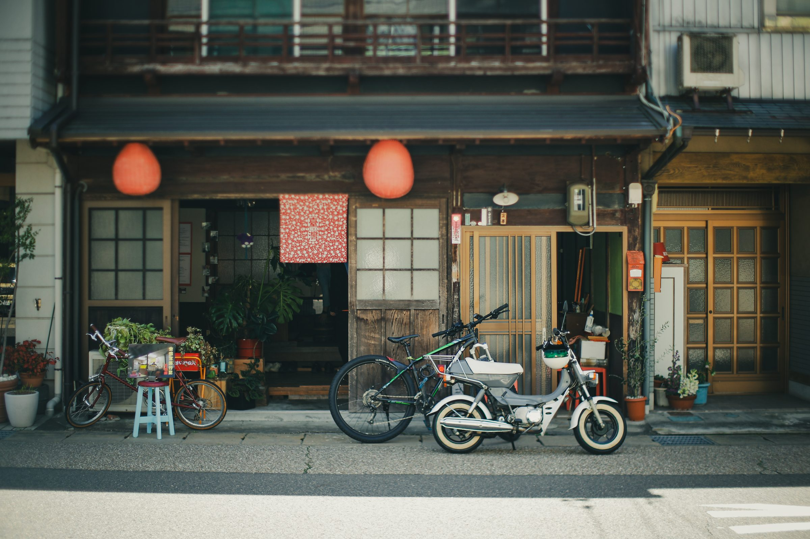
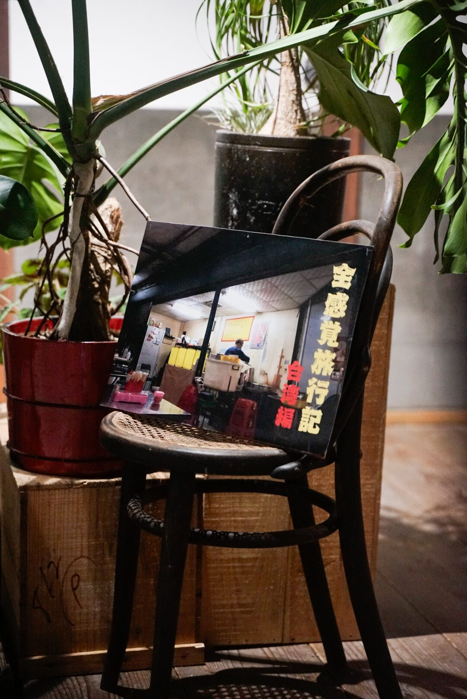
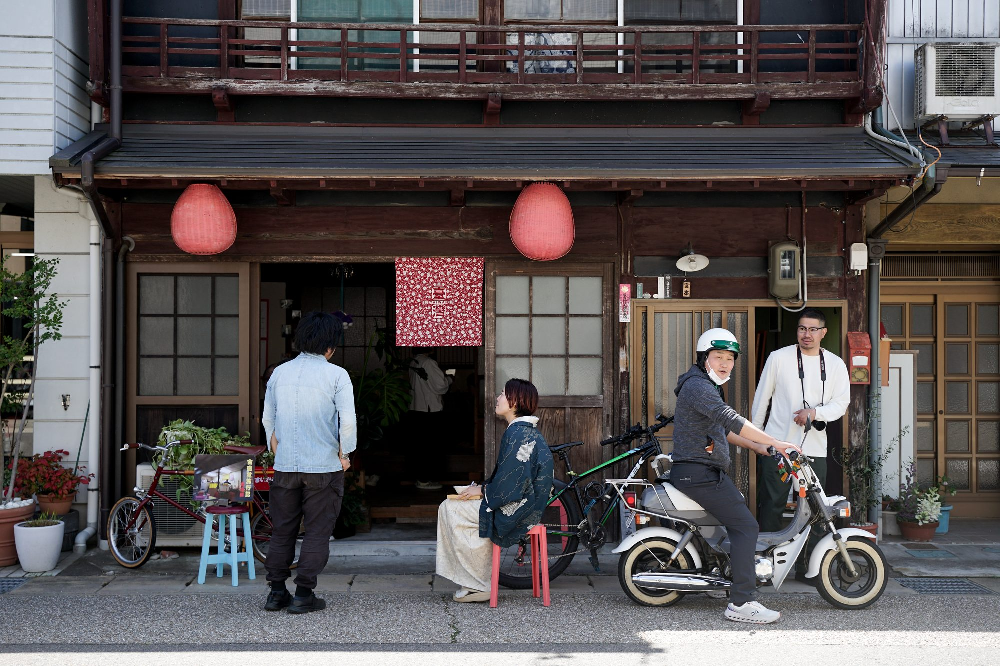
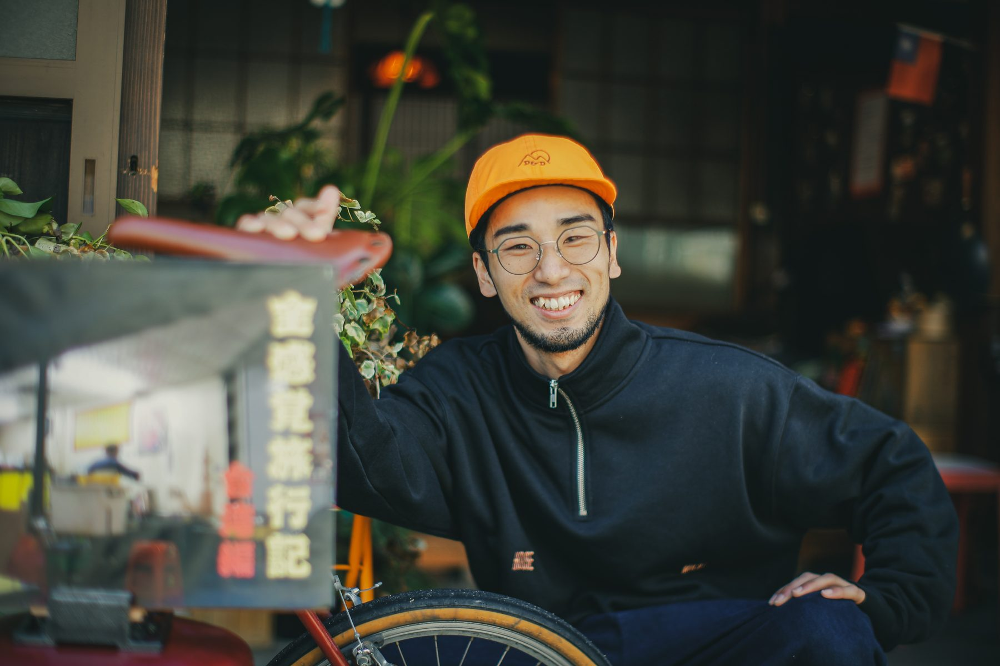

REPORT
当日の記録
2026年4月12日（日）・13日（月）、岐阜県郡上市八幡町城南町。軒先に提灯を吊るして、二日だけ人が集まる場所になりました。その様子を写真で残しています。
BEFORE OPEN
提灯を吊るすところから。
住宅の並ぶ通りに、赤い提灯を二つ。臺灣と染め抜いた暖簾を掛けたら、それだけで少し空気が変わりました。看板は、台南の食堂で撮った一枚をパネルにして、自転車の前に立てかけました。



EXHIBITION
壁に、文章を貼った。
展示したのは七篇。一篇ずつ赤い枠で囲んで、漆喰の壁に貼りました。その左右に、旅先で撮った写真を糸で吊るしています。写真は文章の説明ではなく、同じ日に見ていたものとして並べました。


TAIWAN ／ 台椀
読んだあとに、
台湾のものを。
郡上八幡で台湾料理を出している「台椀」さんに出店していただきました。豆花と台湾茶。文章を読んで、そのまま帰ってしまうのではなく、口にして帰ってもらえたらと思ってお願いしました。
冷たい豆花を食べながら壁を見ている人が何人もいて、その光景がいちばん嬉しかったです。

TWO DAYS
二日間のこと。
通りがかりに足を止めてくれた方、わざわざ遠くから来てくれた方、近所の方。文章を読むだけの催しに、どれだけ人が来るのか正直わかりませんでした。結果として、思っていたよりずっと長く滞在してくれる方が多かったです。



AFTERWARD
おわりに
旅先で書いた文章は、本来なら自分の手元に残るだけのものでした。それを人に見てもらう形にしたのは、感じたことを自分のなかで咀嚼しきる前に、いちど外に出してみたかったからです。
読んでいる人の背中を眺めている時間は、落ち着かないような、うれしいような、妙な時間でした。二日間、来ていただいたみなさま、出店してくださった台椀さん、ありがとうございました。
宮本雅就